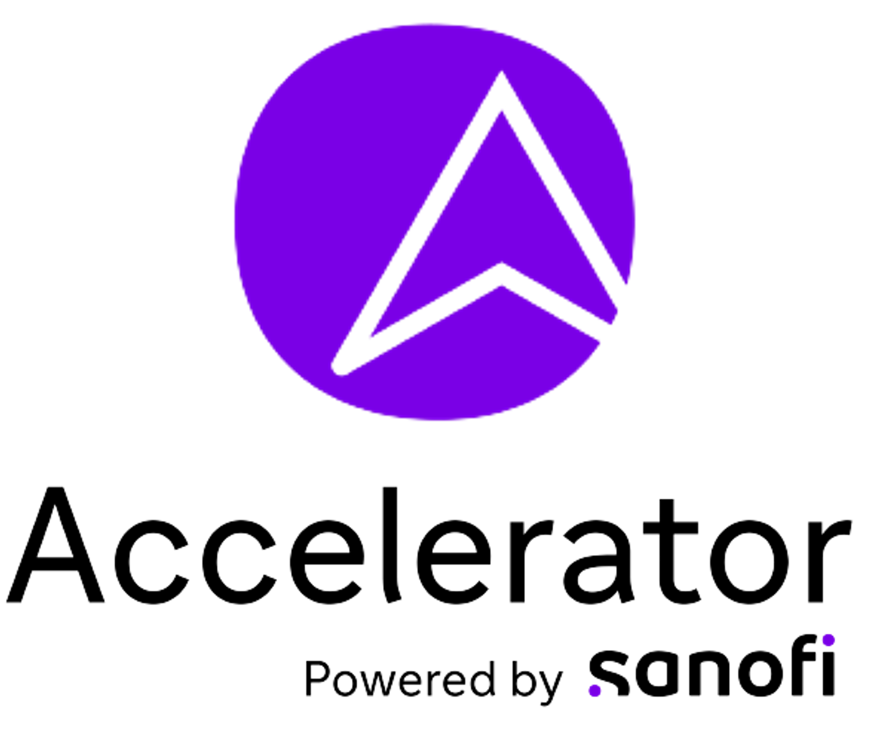
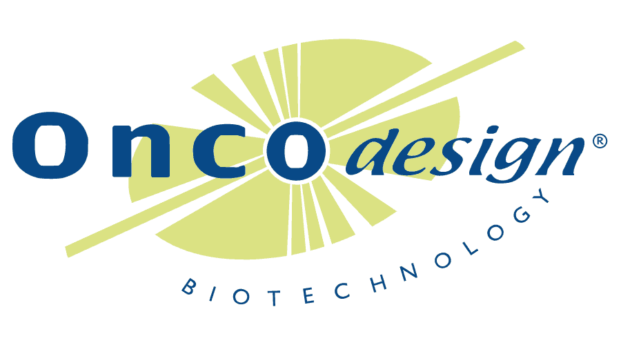
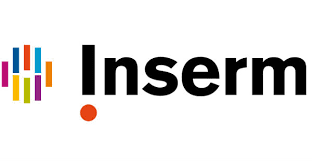
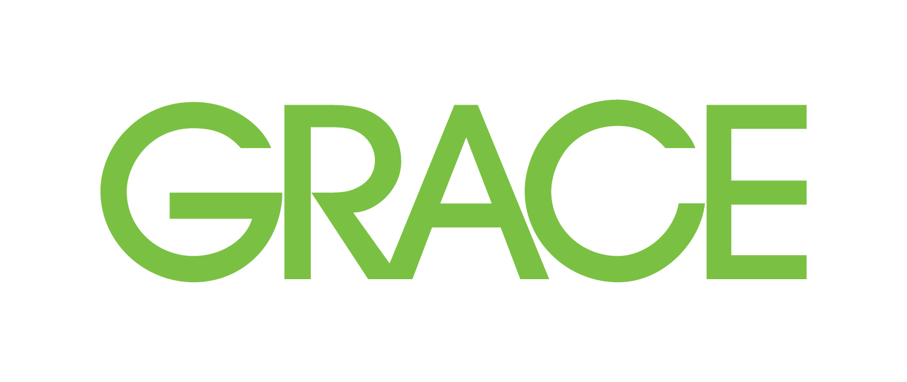

Mickael JEGAT

Full Stack Developper: Upskilling program of the accelerator in digitalisation.
2022/Now
Full Stack Developper: Upskilling program of the accelerator in digitalisation.
2021/2022
Quality Control Technician: Actively involve in SofMax Pro GxP Upgrade, Equipement management, Service provider management, launch of new analysis tools like Invalid rate or RCT, Field Key User for Biolims from Labware.

Immunology technician in a Regulatory environment (GLP/GcLP): Immunogenicity (ADA) and Parmacokinetic (PK) method development on MSD technology, Hybridization ELISA assay with DNA probes coupled with specifics proteins (biotin, digoxigenin, Sulfotag,…), Chromatographic purification development, Technology review, MS/MS assay for DMPK team
Responsible for GxP Validation of Computerized system: Validation Report, Systems administration, Risk assesment, Regulatory Excel® sheet validation, CAPA, Change control
HSE coordinator: Internal audit, New protocoles after the growth of the company, SARS-CoV-2 protocols
2018/2021
Immunology technician in a Regulatory environment (GLP/GcLP): Immunogenicity (ADA) and Parmacokinetic (PK) method development on MSD technology, Hybridization ELISA assay with DNA probes coupled with specifics proteins (biotin, digoxigenin, Sulfotag,…), Chromatographic purification development, Technology review, MS/MS assay for DMPK team
Responsible for GxP Validation of Computerized system: Validation Report, Systems administration, Risk assesment, Regulatory Excel® sheet validation, CAPA, Change control
HSE coordinator: Internal audit, New protocoles after the growth of the company, SARS-CoV-2 protocols
2015/2018
R&D analyst: High Throughput method development, Characterisation studies of mAb by glycan analysis with UPLC-FLD, UPLC-MS, xCGE-LIF with a DNA sequencer, SDS-PAGE with microfluidic equipement, Automation protocol development on robotic platforms (Bravo platform for a Gyrolab Test), lab digitalisation review (LIMS test), Magnetic beads based glycan analysis method development in collaboration with a supplier (KingFisher™), Analytical studies for process's development
2013/2014
School supervisor: Teamworking, Group management

Lab Research Assistant: Testing of a new retina model for human research, Nestine's role in ARMD (Aged related macular degeneration)
2013
Lab Research Assistant: Testing of a new retina model for human research, Nestine's role in ARMD (Aged related macular degeneration)

Quality/Control lab assistant: Composing new colors for concrete, Batch control and batch released
2012
Quality/Control lab assistant: Composing new colors for concrete, Batch control and batch released